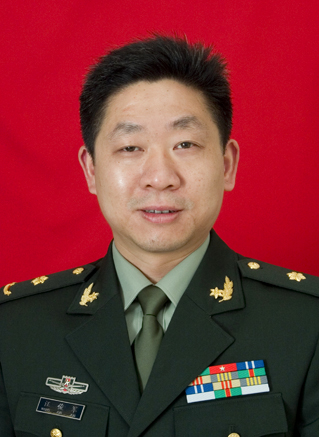

汪俊军，南京军区南京总医院全军临床检验医学研究所检验科主任，教授，博士生导师。“中国生物化学与分子生物学会临床应用生物化学与分子生物学分会”理事、“中国生物化学与分子生物学会脂质与脂蛋白专业委员会”委员，“中华医学会检验分会临床生物化学专业组”副组长，南京军区检验专业委员会副主任委员；国内外多家杂志的编辑、审稿人。主要研究方向：脂蛋白与动脉粥样硬化发病机理的关系研究；以第一作者（或通讯作者）发表论文100多篇，其中SCI论文30余篇；以第一完成人获省部级科技进步一、二等奖4项。
